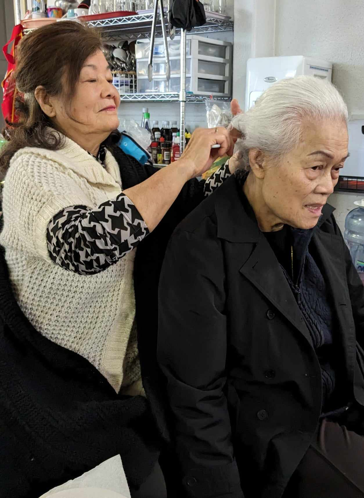
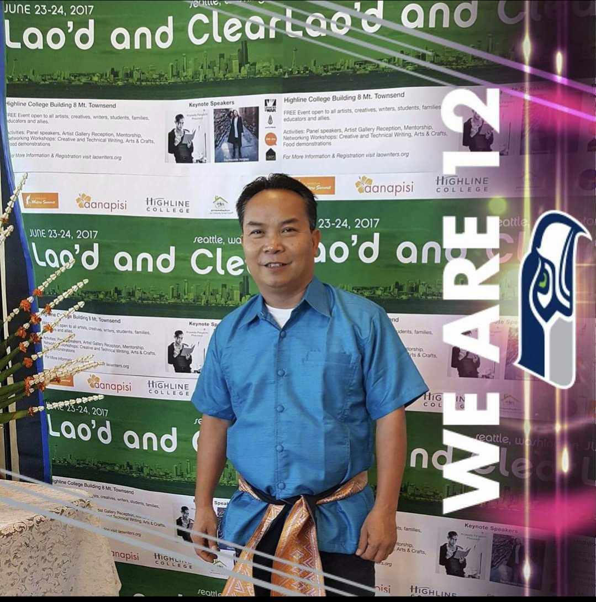
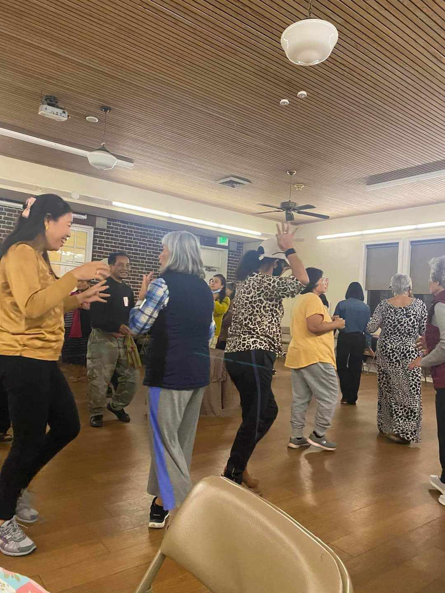

Lao Senior Outreach
seniors are our life, our wisdom, our community
Empowering Aging with Care and Compassion, Embracing Generations in Celebrating Heritage, and Enriching Lives
Mission
- We work towards building a community that fosters vibrant living and integrated cultural sharing.
Our mission is to eliminate the isolation of Southeast Asian seniors by providing a wide range of culturally familiar
programs that encourage social, physical, psychological, and emotional well-being.
The Southeast Asian community is experiencing an aging population, no different than the mainstream, but with distinct language, cultural, and service barriers. The Lao Senior Outreach Program understands the importance of ensuring marginalized elders continue to enjoy an active and engaging lifestyle as they age.
Our Mission is to eliminate the isolation of Southeast Asian elders by providing a wide range of culturally-familiar programs and resources that encourage social, physical, mental and emotional well-being. We pursue this mission through an integrated, holistic commitment to:
Build a community that fosters vibrant living & integrated cultural sharing.
Surround the most vulnerable and economically fragile in a supportive community.
Provide elders with a familiar sense of inclusion and productivity.
Spark joy for older adults

Vision
- We work towards building a community that fosters vibrant living and integrated cultural sharing.
Our Vision is to promote healthy aging while enhancing the quality of life for elders in Southeast Asian communities. We offer a wide variety of events, programs, activities and resources designed to enrich everyday life, foster social connections, and alleviate boredom and depression.

Home Visits
- We work towards building a community that fosters vibrant living and integrated cultural sharing. 
Home visits allow Lao Senior Outreach teams to evaluate possible problems in the living environment of homebound older adults. Home visits help seniors ward off feelings of stress, social isolation, and depression while allowing opportunity to assess their physical and mental health status, provide professional support and/or make referrals to specialist care if needed.
Cultural Enrichment
- 
This program is to provide meaningful engagement for senior adults to express themselves culturally, honor their history and traditions, internalize cultural values, increase self-confidence, restore and/or boost purpose and meaning to life, improve connectedness and a sense of belonging.
Our Programs
We offer language-specific, culturally familiar programs & services to older adults that can help them learn to manage & delay the onset of chronic disease while experiencing measurable improvements in their physical, social, spiritual, emotional, mental, & economic well-being.
HOME VISITATION
HEALTH AND WELL-BEING
CULTURAL ENRICHMENT

Health and Well-Being
- 
Inactivity in seniors can contribute to cancer, diabetes, osteoporosis, depression, hyper-tension, and premature death. Seniors who are socially engaged benefit from a greater sense of belonging and higher self-esteem levels. Group outings and activities for seniors will provide all the benefits of physical activity, mental stimulation, and social interaction crucial to optimal health in older adults.
Health and Well-Being
Inactivity in seniors can contribute to cancer, diabetes, osteoporosis, depression, hyper-tension, and premature death. Seniors who are socially engaged benefit from a greater sense of belonging and higher self-esteem levels. Group outings and activities for seniors will provide all the benefits of physical activity, mental stimulation, and social interaction crucial to optimal health in older adults.